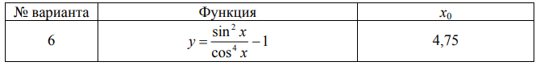

Решение задачи 1.5. (6)

Шаг 1: Подставляем значение x = 4.75
Дано: x = 4.75 (в радианах). Нам нужно вычислить значение функции:
y = (sin²(x) - 1) / cos⁴(x)
Сначала подставим значение x = 4.75 в эту формулу.
Шаг 2: Вычисляем sin(4.75)
Используя калькулятор, находим значение синуса для угла 4.75 радиан:
sin(4.75) ≈ -0.999923
Это значение синуса мы будем использовать в формуле.
Шаг 3: Вычисляем cos(4.75)
Теперь найдем значение косинуса для угла 4.75 радиан:
cos(4.75) ≈ 0.012389
Это значение косинуса также понадобится для вычислений.
Шаг 4: Подставляем значения в формулу и вычисляем
Подставляем найденные значения синуса и косинуса в нашу формулу:
y = (sin²(4.75) - 1) / cos⁴(4.75)
Сначала возведем значение синуса в квадрат:
(-0.999923)² = 0.999846
Затем вычитаем 1:
0.999846 - 1 = -0.000154
Теперь возводим значение косинуса в четвертую степень:
(0.012389)⁴ ≈ 0.0000235
И теперь делим числитель на знаменатель:
-0.000154 / 0.0000235 ≈ -707.25
Ответ: y ≈ -707.25
Итак, при x = 4.75 значение функции y ≈ -707.25.